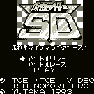

Kamen Rider - Gameboy Games

- Company: Yutaka
- Date Released: 1993
- Genre: Racing simulation
Controls
- A button: Accelerate
- B button: Attack
- Start: Pause
- Select: [not used]
You must guide Kamen Rider past unique obstacles and use his weapons to outrace his enemies.
Anime Video Game Resource Center © 1998 by Luis A. Cruz